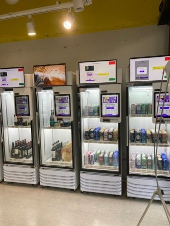

무인창업 멀티자판기·자동판매기 설치 — 소자본으로 시작하는 법

큰돈과 인력 없이 시작할 수 있어 무인창업에 관심 갖는 사장님이 많습니다. 그중에서도 멀티자판기·자동판매기는 매장을 통째로 차리지 않아도, 자리 하나만 있으면 24시간 무인으로 파는 소자본 창업 아이템입니다. 이 글은 무인창업을 처음 알아보는 분을 위해 멀티자판기·자동판매기의 종류, 창업 비용과 수익, 그리고 어떻게 알아봐야 하는지를 정리한 것입니다.
1. 멀티자판기·자동판매기란
자동판매기(자판기)는 직원 없이 상품을 파는 기계입니다. 예전엔 음료 한 종류만 팔았지만, 요즘 멀티자판기는 한 대에 음료·스낵·컵라면·생활용품 등 여러 품목을 담아 작은 무인편의점처럼 운영됩니다. 화면에서 고르고 카드로 결제하는 스마트 자판기가 대표적이고, 아이스크림·냉동식품용 냉동 자판기, 음료용 냉장 자판기도 함께 구성합니다.
2. 무인창업이 좋은 이유
① 소자본 — 매장 임대·인테리어 없이 자판기 한 대로 시작 가능.
② 인건비 0원 — 무인으로 24시간 운영.
③ 부업·투잡 — 본업이 있어도 원격으로 관리하며 부수입.
④ 확장 쉬움 — 잘 되는 자리를 늘려 여러 대로 키우기 좋습니다.
⑤ 현금 없는 운영 — 카드·간편결제라 관리·정산이 편합니다.

3. 어디에 두면 잘 되나
무인창업의 성패는 자리(입지)에서 갈립니다. 편의점이 없는 상가 앞·오피스·공장·학교·학원·병원·헬스장·사우나·PC방·캠핑장·펜션처럼 사람 동선이 꾸준한 곳이 좋습니다. 근처에 살 곳이 없을수록 자판기가 독점합니다. 입지에 맞춰 품목(음료·간식·생활용품)을 다르게 채우는 게 핵심입니다.
4. 창업 비용과 수익
비용은 기기값(구입) 또는 월 이용료(렌탈·임대) + 상품 매입비로 크게 나뉩니다. 구입은 이후 월 비용이 없어 장기 운영에 유리하고, 임대·렌탈은 초기 부담 없이 매출로 회수하는 방식이라 처음 시작에 안전합니다. 수익은 매출 − 상품 원가 − (자릿세·월 이용료) = 순이익이며, 인건비가 없어 자리만 맞으면 꾸준히 남습니다. 안 될 자리는 먼저 솔직히 말씀드립니다.

5. 직접운영 vs 위탁운영
직접운영은 상품을 직접 매입·보충해 마진이 크고, 위탁운영은 운영사가 재고를 맡아 손이 덜 갑니다. 부업으로 여러 대를 굴린다면 위탁이나 원격 관리 시스템이 유리합니다. 자판기 프랜차이즈형으로 묶어 운영하는 방식도 있습니다.
6. 사장님, 이렇게 알아보세요 (체크리스트)
① 입지·품목 분석을 해주는지(가장 중요)
② 설치비·기기 비용(구입·렌탈·임대 비교)
③ 카드·삼성페이·QR 결제 지원
④ 재고·매출 원격 관리
⑤ 냉장·냉동·멀티 구성 옵션
⑥ 빠른 A/S와 통신 안정성
⑦ 구매·임대·위탁 등 운영 방식 선택지
7. 무인창업, 이렇게 시작하세요
H포스는 설치비 무료로 멀티자판기·자동판매기·냉장·냉동 자판기를 입지에 맞춰 구성해 드립니다. 카드·간편결제 연동, 원격 재고·매출 관리까지 세팅하고, 구입·렌탈·임대 중 부담이 적은 방식을 함께 정합니다. 두려는 자리와 예산만 알려주시면, 어떤 품목으로 어떻게 시작하면 좋은지까지 무료로 상담해 드립니다.
📞 무인창업 멀티자판기 설치 상담 010-6832-1994